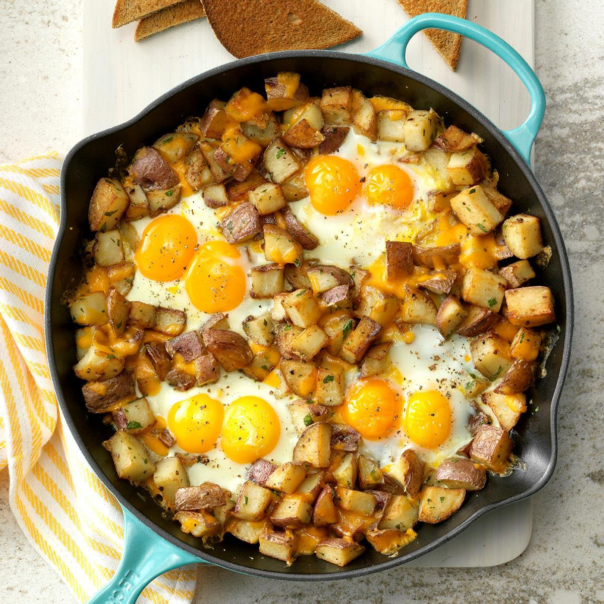

Potatoes and Eggs

Sunny-side-up Eggs with Potatoes
This recipe is a quick and simple one. We start with opeing our packet of pre-made potatoes. We follow that by placing them on a skillet where we let them cook. We cook eggs suuny side up on a different skillet and once they are both done we plate.
Ingredients
- pre-cooked potatoes
- eggs
- salt
- pepper
- oil
Steps
- open your pre-made potatoes
- add oil to a pan
- add pre-cooked potatoes to the pan
- add two eggs to the pan
- cover pan with lid to cook the eggs
- serve